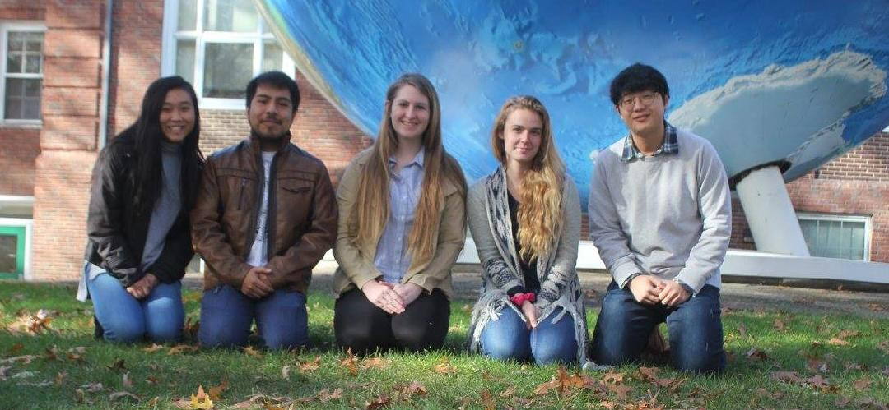

About Us
We are team “Manny the Man” or MTM made up of students that attend Olin College of Engineering and Babson College. We came together in the Olin class Principles of Engineering (PoE) to work on Manny as the final project. A primary focus during the course of our project has been maintaining team health and facilitating an environment where we all meet our learning goals.
Meet the Team
Seungin Lyu
I'm a Sophomore at Olin College of Engineering. I have substantial interest in community technology, and I'm majoring in Engineering with concentration in Computing (E:C, an Olin way of saying Computer Science). My goals for this project were to learn how to effectively process raw motion tracking data into servo control outputs, learn to design a control system that operates multiple(>8) servos simultaneously, and learn how to integrate complex software systems. Please Visit my Github profile if interested!
Chloe Brooke
Grace Huang
I am a Sophomore at Babson College pursuing a dual concentrating in TED (Technology, Entrepreneurship and Design) and Global Business Management. For this project, I am working to further my knowledge in software (python & Arduino) and pulley systems. I worked heavily on the progress page along with the Arduino code. I loved seeing the integration between software, electrical and mechanical.
Antonio Perez
I’m a second-year student at the Olin College of Engineering. I am an aspiring Mechanical Engineer, and am interested in mechanical systems and design. I enjoy contributing my engineering abilities to things with social value, or that make a difference in people’s lives.
Allison Basore
I am a Sophomore at Olin College of Engineering Electrical and Computer Engineering and am working toward expertise in software and electrical systems. My learning goals for this project were to learn robust coding practices and gain experience with Arduino code, signal processing, and circuit design.